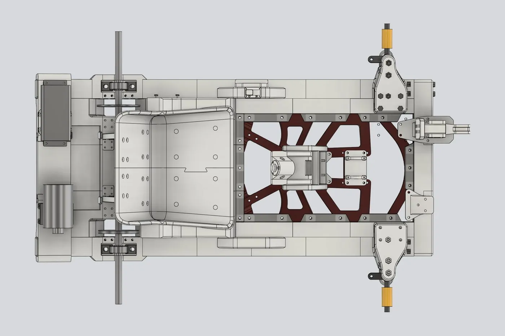

03 · 설계 원칙
그림이 아니라,
만들 수 있는 설계.
화면 속에서만 멋진 설계는 의미가 없습니다. 실제로 출력하고 조립할 수 있어야 합니다.
1구할 수 있는 부품을
구할 수 있는 부품을
먼저 구했습니다
바퀴, 축, 모터, 모터 컨트롤러, 조향 부품은 시판 부품을 먼저 정하고, 프레임을 그 치수에 맞춰 설계했습니다.
2출력 방향이
출력 방향이
곧 강도
출력 부품은 층과 층 사이가 가장 약합니다. 하중이 그 방향으로 걸리지 않도록, 부품마다 출력 방향을 먼저 정하고 형상을 그렸습니다.
3끼우고, 붙이고,
끼우고, 붙이고,
덧댈 수 있게
부품은 갈고리처럼 서로 끼워 맞춘 뒤 본드로 고정했습니다. 공차는 수축과 크기를 고려해 0.1~0.3mm 사이에서 잡았습니다. 보강이 필요할 만한 곳에는 볼트 구멍을 미리 설계해 두어, 출력한 보강 부품을 나중에 덧댈 수 있게 했습니다.
4맞을 때까지
맞을 때까지
출력
시제품을 수십 개 출력해 하나씩 맞춰 나갔고, 불안한 곳은 보강 부품을 더해 해결했습니다. 가장 큰 부품은 한 개 출력에만 24시간 넘게 걸렸습니다.


출력 부품은 전부 PLA, 뱀부랩 X1CC로 뽑았습니다.